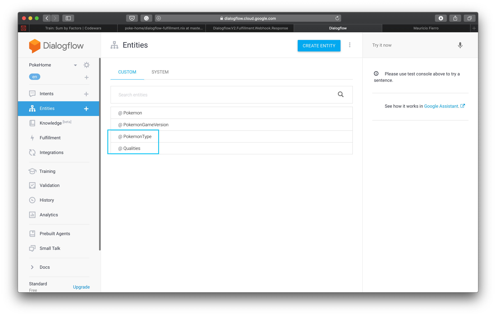
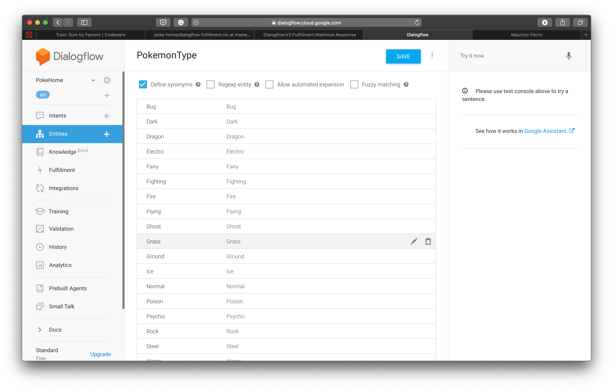
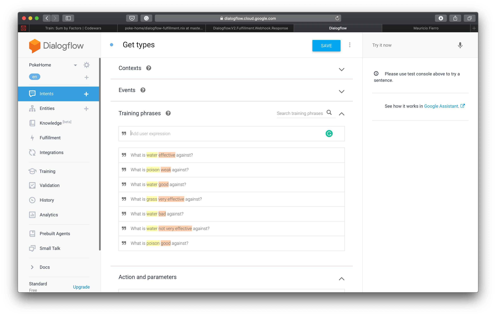
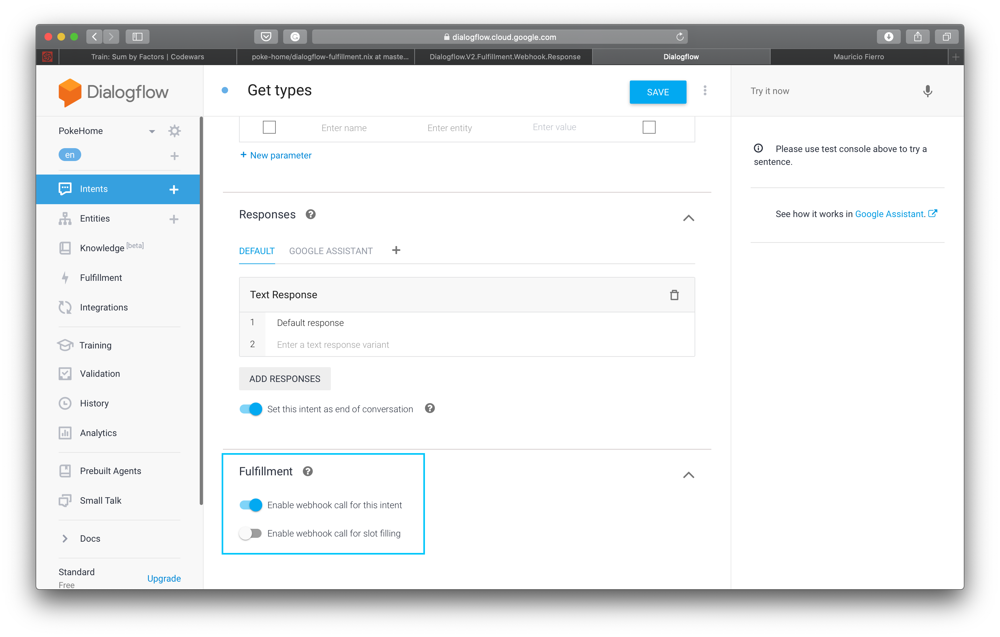
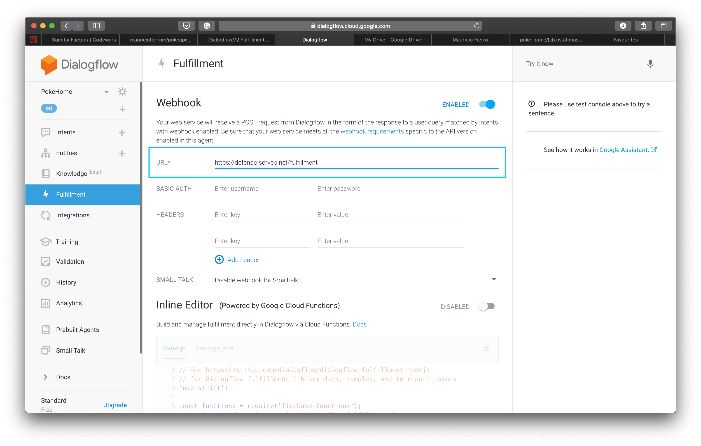

Dialogflow is a Google service to create conversational services easily.
The documentation describes it like this:
Dialogflow is a natural language understanding platform that makes it easy to design and integrate a conversational user interface into your mobile app, web application, device, bot, interactive voice response system, and so on. Using Dialogflow, you can provide new and engaging ways for users to interact with your product.
The process is rather simple. The basic elements are Agents. An Agent can have one or more Intents, which are the actions that the user wants the agent to complete. In order to achieve that, the intents must define a series of Entities that can appear in phrases uttered/written by the user. The agent has to be trained with possible phrases that could trigger the Intent, and that contain the entities defined for them. Intents, therefore, are matched on whether a phrase that contains the entities required is recognized. Then the Entities and the matched Intent are bundled in a request to a fulfillment webhook, which is defined by the programmer (e.g. you) to respond with different formats. If data has to be preserved across the conversation, they can be set in the Context of the conversation.
It is a bit complex to grasp if you’re new to this, so let’s work on an example.
We’ll build a fulfillment webhook for two cases. The first one will be a question and an answer, and the second will be a little conversation to show the use of contexts.
(Pokémon) Types
Our first example will be an Intent to find weaknesses and strengths of Pokémon types. We’ll need two entities for our example: Quality and PokemonType. A quality will be either Weak or Effective.

To train the Agent, we must provide all possible values for the Entity, so that it can be recognized in user phrases. It’s easy to do so for the Quality and for the PokemonTypes. Depending on your use case, you could also define synonyms for the values, which would make Intent matching more accurate. For the sake of the example, we’ll keep things simple.

Now we must provide training phrases in the Intents section. Adding as many possible phrasings of the desired input will make Intent matching more accurate.

The Action and parameters section will be automatically populated by the Entities recognized from the data we provided for the Intent and turn into their parameters.
We must toggle the Enable webhook call for this intent option in the Fulfillment section of the Intent, to make Dialogflow contact the endpoint that will handle the response creation. If we don’t, then the Responses must be set in the same page and will always be the same.

This covers all the setup required from the Dialogflow console. The next steps will be to create our webhook in Haskell to generate the responses for the Intents.
Fulfillment webhook
Our webhook will be a servant endpoint that will receive the WebhookRequest, get the parameters from it, make a call to the PokéApi and answer with the desired response. To manage the queries we’ll use a simple PokéApi client created using servant-client, just for the sake of the example. To parse the request, get the intent’s parameters and create the appropiate responses, we’ll use the dialogflow-fulfillment library.
Let’s start with the definition of our API and the application to serve it:
type API = "fulfillment" :> ReqBody '[JSON] WebhookRequest :> Post '[JSON] WebhookResponse
fulFillmentAPI :: Proxy API
fulFillmentAPI = ProxyYou can check the natural transformation required in order to use the PokeApi monad stack with Servant in the github repo.
We need to create the fulfillment function to handle the request and return the collection of responses.
First, we need a function to query the PokéApi with the parameters received in the request, which is defined as follows:
typeWebhookRequest :: WebhookRequest -> PokeApi [Type']
typeWebhookRequest req =
let typeParam = extractTypeParameter req
qualifierParam = extractQualifierParameter req
in case (typeParam, qualifierParam) of
(Just type', Just qualifier) ->
case qualifier of
Effective -> effectiveAgainst type'
Weak -> weakAgainst type'
_ -> error "Failed!"This function extracts the type and qualifier parameters from the QueryResult portion of the WebhookRequest. If both exist, then we use PokeApi’s client library to check what types are effective or weak against the given type, depending on the qualifier parameter.
We use it in the function that will handle the request.
fulfillIntent :: WebhookRequest -> String -> PokeApi WebhookResponse
fulfillIntent req = \case
"Get types" -> createTypeResponse <$> typeWebhookRequest req
...If we got the type, we create the WebhookResponse of the fulfillment, which is a type defined in dialogflow-fulfillment. For this example, we’ll just add a simple response.
createTypeResponse :: [Type'] -> WebhookResponse
createTypeResponse types =
let types' = fmap getTypeName types
msg = T.unpack $ T.intercalate " and " types'
speechResponse = SimpleResponse (TextToSpeech msg) (Just msg)
response = G.Response False Nothing (G.RichResponse [G.Item $ G.SimpleResponse speechResponse] [] Nothing)
payload = Just $ G.GooglePayload response
in WebhookResponse (Just msg)
(Just [Message $ SimpleResponses [speechResponse]])
(Just "mauriciofierro.dev")
payload
Nothing
NothingWe’re taking every Pokémon type we got from the PokéApi and intercalate the word and between them. This will be the message that the user will receive.
At this point I’ll cheat and introduce the concept of a Payload a bit late. A payload is a JSON structure that defines the possible responses for platforms other than Dialogflow, for which Dialogflow offers integrations. They can be the Google Assistant, Facebook Messenger, Slack, Telegram, etc. You can check the documentation for all platforms supported.
Currently, however, the dialogflow-fulfillment library only supports the Google Assistant payload.
We use the GooglePayload type to add a SimpleResponse for the Google Assistant as well, so we can actually try it with the assistant on an android phone or on the Google Actions Simulator (after enabling the Google Assistant integration in the Dialogflow Console).
...
response = G.Response False Nothing (G.RichResponse [G.Item $ G.SimpleResponse speechResponse] [] Nothing)
payload = Just $ G.GooglePayload response
...The SimpleResponse type in the GooglePayload module has the correct ToJSON instance to generate a valid response for the Google Assistant.
If we test the action asking:
What is poison weak against?
We’ll get the response:
ground and psychic
Fulfillment with Context
For our second example we’ll try to get the list of areas in a game that we can find Pokémons at. For that we need to have a little more complicated conversation.
We’ll ask our assistant where a Pokémon is, the assistant will ask us in what game we want to know the location, and we will answer with the name of the game. The assistant then must provide us with all the areas that the Pokémon in question can be found at in the game we indicated. Let’s see an example using Bob as the assistant’s name and Alice as our name:
Alice: Where’s Deoxys?
Bob: In what game?
Alice: Diamond
Bob: In area 1 and area 3 and area 51 and area n
To preserve data across questions and answers, Dialogflow provides us with Contexts. They have as much of a lifespan as we set for them. For our example we need to save the name of the Pokémon in the context to use after our agent has enough information to query the PokéApi and generate a correct response.
All we’ll do from the Haskell side will be to extract the parameters and context in the follow-up intent, and query the PokéApi with the knowledge we’ve gathered. From the Dialogflow side, we’ll create a follow-up intent by clicking the option in the list of Intents.
And then create a Context in the original Intent.
Now all we have to do is extend our current webhook to match on our two new intents:
- Get Pokemon Location
- Get Pokemon Location - custom
In our initial intent we’ll just answer with the In what game? question.
...
"Get Pokemon location" ->
let msg = "In what game?"
speechResponse = SimpleResponse (TextToSpeech msg) Nothing
response = G.Response True Nothing (G.RichResponse [G.Item $ G.SimpleResponse speechResponse] [] Nothing)
payload = Just $ G.GooglePayload response
in return $ WebhookResponse (Just msg) (Just [Message $ SimpleResponses [speechResponse]]) (Just "mauriciofierro.dev") payload Nothing Nothing
...The follow-up Intent is just like any other Intent. It needs a parameter and training phrases. In this case, the parameter we need is the name of the (main) Pokémon games. We feed all possible names and we let Dialogflow do its magic.
Finally, we match on the follow-up Intent, and retrieve the Context that should’ve survived from the previous question, and the new parameter we need: the name of the game.
extractEncounterParams :: WebhookRequest -> Maybe EncounterParams
extractEncounterParams req = do
game <- extractGameParameter req
oCtxs <- outputContexts (queryResult req)
name <- getContextParameter oCtxs (session req <> "/contexts/getpokemonlocation-followup") "Pokemon"
return EncounterParams{..}We use the Maybe monad because monads are useful math-based abstractions we like having the option of learning some day outside the context of Haskell and which are also related to a couple of nice food metaphors, and we don’t fear them.
If we were able to extract the encounter parameters successfully we can query the PokéApi with them:
gameLocationWebhookRequest :: WebhookRequest -> PokeApi [String]
gameLocationWebhookRequest req =
case extractEncounterParams req of
Just EncounterParams{..} -> pokemonEncounterByGame name game
Nothing -> lift . except $ Right []We match on our follow-up-intent and have the final form of our Intent fulfillment:
fulfillIntent :: WebhookRequest -> String -> PokeApi WebhookResponse
fulfillIntent req = \case
"Get types" -> createTypeResponse <$> typeWebhookRequest req
"Get Pokemon location" ->
let msg = "In what game?"
speechResponse = SimpleResponse (TextToSpeech msg) Nothing
response = G.Response True Nothing (G.RichResponse [G.Item $ G.SimpleResponse speechResponse] [] Nothing)
payload = Just $ G.GooglePayload response
in return $ WebhookResponse (Just msg) (Just [Message $ SimpleResponses [speechResponse]]) (Just "mauriciofierro.dev") payload Nothing Nothing
"Get Pokemon location - custom" -> createFollowupResponse <$> gameLocationWebhookRequest reqEt voilà! We have an Agent that will tell us where to find a Pokémon in a certain game and the strengths/weaknesses of Pokémon types.
You can test the project by cloning and building it using nix or cabal. In order to make the API available to the Dialogflow Agent (which runs as a Google Action) you can use a service like serveo or ngrok.
You’ll need to setup the project in the Dialogflow console. You can import the agent using this exported zip. A final configuration will require to add the URL that points to your (exposed) fulfillment webhook:

Conclusion
This was a rather basic introduction to Dialogflow and how to create Agents using the servant + dialogflow-fulfillment libraries.
I wrote the dialogflow-fulfillment library so any feedback, issues or PRs about it would be greatly appreciated.
If you’re new to servant or servant-client you’re encouraged to add pull requests to the poke-home and pokeapi repositories to try and extend their functionality. I’ll do my best to provide feedback in code review.